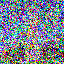

t = 250

t = 500

t = 750

The forward process slowly adds noise to a clean image at each timesteps. This is used for training the model to reverse this addition of noise and generate new images. Below you can see the forward diffusion process applied to the test image at timesteps 250, 500, and 750:
We try to apply classical denoising using gaussian blur on images with different noise levels. We see that this method isn't very effective. Now we have some more motivation for implementing more advanced methods!


Now, we use a pretrained diffusion model to denoise the images at different noise levels (t = 250, 500, 750). We estimate the noise in the image using the trained UNet and remove it from the noisy images using the given equation. Then we get an estimate of the original image! Here are the one-step denoised images:
Original image


I implemented iterative denoising using the pretrained diffusion model. We apply the model repeatedly to remove noise at each timestep. We can see this approach outperforms one-step denoising and Gaussian blur. Below are the results at every 5th loop using i_start = 10.

We can also denoise random noise to generate images with our diffusion model! Here are 5 samples of this:
CFG allows us to control the conditioning on the prompt, resulting in higher quality images. We have unconditional and conditional noise estimates where unconditional noise estimates are using the empty prompt "". Then we use the CFG formula to combine the two estimates! Here are 5 samples
CFG lets us make edits to existing images by adding noise and then denoising them! The amount of noise added helps determines the extent of the edits made. Therefore, we can make gradual edits to the images with varying noise levels. Below are the results of applying this ot image to image translation:


Now we can use the same method of noising and denoising to project sketches and cartoons into realistic images!

Now we perform inpainting, reconstructing a masked part of an image using our diffusion model! I applied a binary mask on the region that we want to use the model to inpaint/edit, added noise to the masked area, and denoised it step by step.


Now we add text guidance to image-to-image translation! I continue to use cfg to control the conditioning on the prompt.
prompt = "a rocket ship"
prompt = an oil painting of a snowy mountain village
prompt = a photo of the amalfi cost
To create visual anagrams, I used a diffusion model where an image appears as one object upright and a different object when flipped. I did this by the averaging noise estimates for the two text prompts before each reverse diffusion step. An important step I originally missed was doing the unconditional noise estimate for both upright and flipped.
prompt1 = 'an oil painting of people around a campfire', prompt2 = 'an oil painting of an old man'

prompt1 = 'a lithograph of waterfalls', prompt2 = 'a lithograph of a skull'

prompt1 = 'a photo of the amalfi cost', prompt2 = 'a photo of a dog'
To create these hybrid images, I got the low and high frequencies from noise estimates conditioned on two different prompts. Low-pass filtering is applied to one prompt's noise estimate and high-pass filtering is applied to the other. Then I average them into one noise estimate. As a result, the image looks different from close up vs. far!
prompt1 = 'a photo of the amalfi cost', prompt2 = 'a photo of a dog'
prompt1 = 'a pencil', prompt2 = 'an oil painting of people around a campfire'
prompt1 = 'a pencil', prompt2 = 'a rocket ship'
prompt1 = 'an oil painting of a city landscape at night', prompt2 = 'a bookshelf of colorful books'
prompt1 = 'a lithograph of a snake', prompt2 = 'a lithograph of waterfalls'
prompt1 = 'a man with a hat', prompt2 = 'a realistic portrait of a cartoon bear'
We train a UNet to take in a noisy MNIST image and predictd the clean image. The UNet consists of downsampling and upsampling blocks with skip connections. I used convolutional layers with GELU activations and BatchNorm and followed the instruction diagrams. To train the model, I add Gaussian noise to the images during each epoch and optimize using L2 loss. Below I show samples after the first and fifth epochs. We also see the performance across a range of distributions other than sigma = 0.5 which was what was trained on.

Epoch 1 Samples
Epoch 5 Samples
For the time-conditioned UNet, the UNet takes in a noisy image and a time step and learns to predict the noise added at that time step. Like the previous step, the UNet consists of downsampling and upsampling blocks with skip connections. I used convolutional layers with GELU activations. For the time-conditioning, I added two FCBlock modules to embed the time scalar into feature vectors that are added to the UNet.
In this part, I train the UNet to condition on the class labels to generate specific digits. This requires adding class embeddings into the network and using classifier-free guidance during training and sampling. I added two additional FCBlock modules to embed one-hot encoded class labels. As instructed, I added masking so that the class conditioning is dropped 10% of the time during training so we can also have unconditional generation.